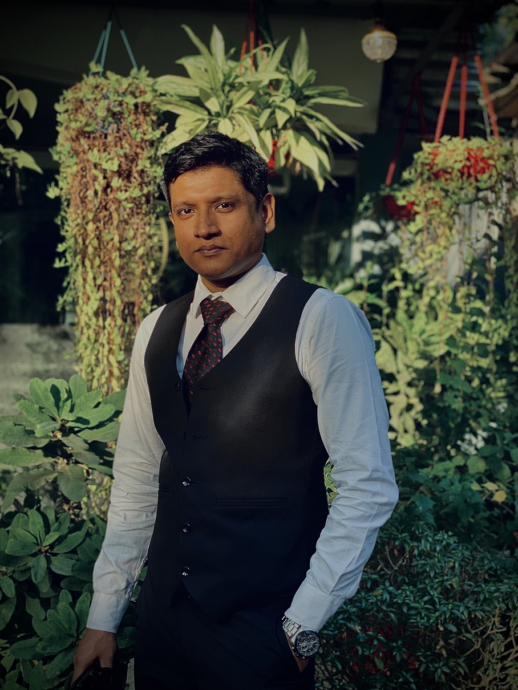

Open to collaborative research and development

Over 5+ years of experience in Research, software engineering, AI, geospatial analytics. Delivered 88+ projects, including mobile apps, AI solutions, and cloud platforms. Passionate about bridging technology and social impact.
I’m an innovative and results-driven IT professional and environmental research associate with over 5+ years of cross-sectoral experience spanning software development, network engineering, geospatial analytics, public health research, and digital platform deployment.
I specialize in bridging technology with social and environmental impact, delivering full-stack digital solutions, AI-powered platforms, and research-driven applications. My work includes developing mobile apps, cloud-deployed systems, data pipelines, and climate resilience tools, as well as designing user-centric digital platforms for communities and organizations.
As a published researcher and multi-award-winning technologist, I bring a unique combination of creativity, leadership, and technical expertise.
Always seeking creative solutions to complex problems and pushing the boundaries of technology.
Writing clean, scalable, and production-ready code with industry best practices.
Staying ahead through research, experimentation, and hands-on development.
Strong communication, teamwork, and values built around collective growth.
feb 2022 - Present | On-site
Overseeing IT infrastructure and digital platforms; leading app and web development, research, and data analysis; managing events, field operations, and publications; designing communications; conducting environmental and public health monitoring; driving innovation and producing visual narratives.
Nov 2022 - Present | Remote
Write and edit research articles and reports with academic rigor; manage DOIs, ISBNs, ISSNs, and journal content on OJS and websites; maintain editorial workflows and peer-review processes; develop digital platforms; oversee secretariat functions and stakeholder communications.
Nov 2016 - Present | Remote
Delivered 60+ projects, built privacy-focused apps, websites, systems and achieved 5-star ratings from 48 clients.
2019 - 2020 | Dhaka, Bangladesh
Contributed to cloud-network integration projects ensuring high availability; performed updates, backups, and disaster recovery; managed secure access and group policies; monitored network performance and conducted root cause analysis to prevent outages.
2024 — Led General Affairs at South Asian Research HUB
2023 — Delivered 45+ backend projects using Python ecosystems
2023 — Achieved 98% accuracy using CNN for automated extraction
"Prottoy is an exceptional researcher with a deep understanding of environmental science, public health, and data-driven decision-making. His expertise spans multidisciplinary research, digital platform development, and innovative solutions for complex challenges. Khaled consistently demonstrates analytical rigor, technical proficiency, and a commitment to generating actionable insights that inform policy and practice"
"Khaled is our go-to expert his problem-solving skills and technical expertise ensure every challenge is handled with precision and efficiency. "
"Delivered complex software solutions on time with professionalism and creativity."
"When Khaled is in the team, the overall team performance increases by 30%, everything is done in his "pro" approach, we call him -elprottoy"
Open-source AI contributions and GitHub projects
Hackathons and collaborative coding events
Environmental advocacy and sustainable tech solutions
Mentoring and training aspiring developers